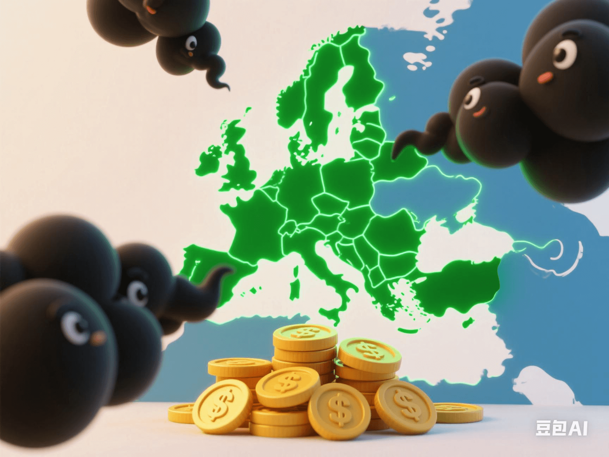

EU Carbon Tariff Countdown: Where Is the 'Green Money-Printing Machine' for Chinese Enterprises?
PeaceLove.Top Insights :2025-04-19
⏳ EU Carbon Tariff Countdown
As the global climate-change problem becomes more severe, countries around the world are taking measures to reduce carbon emissions to achieve the goal of carbon neutrality. Among these efforts, the EU's Carbon Border Adjustment Mechanism (CBAM) has become a highlight in international trade. 🚨 The EU plans to impose carbon tariffs on imported goods in the next few years. The aim is to encourage global producers to reduce carbon emissions by taxing imported goods with high carbon emissions and to ensure that the 'green' products within the EU remain competitive in the market. 🔋🌿 For many exporting countries, led by China, this policy is undoubtedly a major challenge and may also be a 'wealth code' to access the international market. So, when facing this new carbon-tariff regulation, how can Chinese enterprises 'green' their production processes to avoid this additional cost? Can Chinese enterprises win the favor of the global market through 'green transformation'? 💼🌍
🌱 Green-Transformation Opportunities for Chinese Enterprises
Globally, the issue of carbon emissions has become an important topic in the economic and corporate development of each country. The introduction of the EU's carbon-tariff policy will prompt the global market to conduct a more rigorous review of carbon emissions. For China, a major manufacturing country, how to reduce the carbon footprint has become the key for enterprises to maintain their international competitiveness.
1. Carbon Neutrality and Green Manufacturing: Future Growth Points 🏭🌿
Chinese enterprises have great 'green potential'. In recent years, the government has vigorously promoted green technologies and sustainable development. Many enterprises have begun to implement environmental-protection measures, save energy, and reduce emissions in the production process, and are committed to the development of clean-energy technologies. These 'green manufacturing' technologies not only help reduce production costs but also enhance the international competitiveness of products. For example, high-carbon-emission industries in China, such as steel and aluminum, are reducing carbon emissions and improving the green level of the industrial chain by improving energy efficiency, using green energy, and adopting carbon-capture technologies. ⛏️⚡
2. Green Supply Chain: Breaking Through International Trade Barriers 🌐
With the implementation of the EU's carbon-tariff policy, a key factor for enterprises to benefit in the competition is the 'green supply chain'. By reducing carbon emissions in the procurement, production, and transportation processes, enterprises can effectively avoid the additional taxes caused by high carbon emissions and obtain green certifications in the international market. This also means that 'green products' will become the new competitive focus in global trade.
3. Green Finance: Expansion of Financing Channels 💸🌿
To promote the development of the green industry, more and more financial institutions are providing financing tools such as green bonds and green funds. By participating in the green-finance market, Chinese enterprises can not only obtain preferential financing conditions but also enhance their brand image in the international market. Chinese enterprises' participation in the green-finance field not only helps solve the funding problem but also enhances the trust of international investors. 🏦
💡 Challenges and Responses for Chinese Enterprises from Carbon Tariffs
Although green transformation brings opportunities for Chinese enterprises, it still requires considerable efforts and investments to meet the challenges of the EU's carbon tariffs. One of the biggest difficulties Chinese enterprises face is how to achieve green transformation in global competition, reduce carbon emissions, and ensure that products meet the EU's green requirements.
1. Technological Innovation and R & D Investment 🔬💡
To achieve green transformation, enterprises first need to make substantial R & D investments in green technologies. For example, technological breakthroughs in new-energy technologies, carbon-capture and storage technologies (CCS), and clean-energy equipment can help enterprises reduce carbon emissions and improve production efficiency. In addition, the application of technologies such as intelligent production and energy-saving and emission-reduction is also the key to achieving green manufacturing. 📡
2. Policies and Compliance: Seizing the 'Carbon Credit' Opportunity 📊✅
To help enterprises cope with the impact of carbon tariffs, the Chinese government can encourage enterprises to accelerate green transformation by providing green tax incentives and policy subsidies. At the same time, enterprises can also reduce the impact of carbon tariffs through mechanisms such as 'carbon credit' trading and achieve compliance in cross-border trade. 💼
3. Consumer Awareness: Building a Green Brand 🌍
In the international market, more and more consumers are beginning to pay attention to the environmental friendliness of products, especially consumers in regions such as the EU. Therefore, Chinese enterprises should seize this trend, improve environmental awareness, and build a green brand image to gain the favor of more consumers and increase market share. 🌱
🚀 Future Outlook: Carbon Tariffs Leading the Global Green Revolution
The EU's carbon-tariff policy will not only affect Chinese enterprises but also drive changes in the global trade pattern. In the future, as the environmental-protection and carbon-emission-reduction requirements of countries around the world gradually increase, carbon tariffs will become the new normal in international trade. 🌏💚 For Chinese enterprises, how to enhance competitiveness through green transformation will be a key issue in the coming period. Meanwhile, with the continuous advancement of technological innovation and policy support, the green economy will become the new engine of global economic growth, and carbon tariffs will be an important driving force for the global green revolution. ⚡🌱
Conclusion: Opportunities and Challenges of the Green Money-Printing Machine 🌍💡
The implementation of the EU's carbon tariffs will prompt Chinese enterprises to continuously innovate in green transformation and seek new business opportunities. The 'green transformation' of enterprises is not only an urgent need to cope with carbon tariffs but also a new wealth code to access the international market. In the future, carbon neutrality will no longer be a distant goal but the key for global enterprises to win the market and the trust of consumers. 🌱